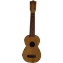

Ukelele is a Unicode Keyboard Layout
Editor, an application that allows you to create and modify
keyboad layouts which can be used with Mac OS X 10.2 or
later.
Beginning with version 10.2 (Jaguar), Mac OS X supports an
XML-based format for keyboard layouts (.keylayout files or bundles
containing .keylayout files). These may be installed by copying
them to the Keyboard Layouts folder
either in the global Library folder or
a user’s Library folder. They are then
activated through System Preferences,
though the exact location varies from version to version of OS X.
In OS X 10.10 (Yosemite), this is the Input
Sources tab of the Keyboard
preference pane.
However, modifying keyboard layouts—let alone creating completely
new keyboard layouts, such as for a new script—by directly editing
the XML files is tedious and error-prone. Ukelele aims to simplify
keyboard layout editing by providing a graphical interface, so that
users can create a keyboard layout by editing key output visually,
without worrying about the underlying XML syntax.
Ukelele can create most kinds of keyboard layout, the exceptions
being the Unicode Hex Input keyboard layout and those associated
with an Input Method, which are usually for complex scripts such as
Chinese, Japanese, Korean, Tamil or Vietnamese.
Ukelele is able to create “dead keys”, which are often used for
adding diacritical marks (accents, tone marks, etc) to other
characters, which can expand the character repertoire of a keyboard
layout considerably.
Previous
chapter
Next
page
|